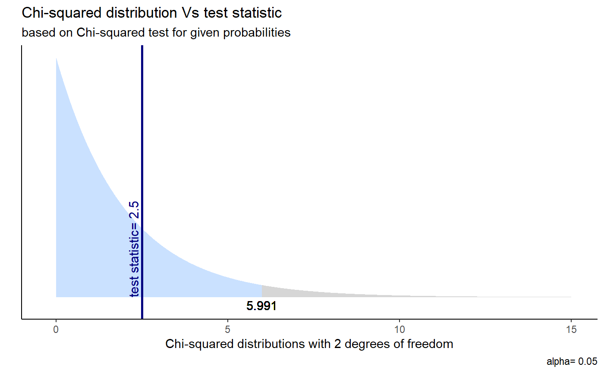
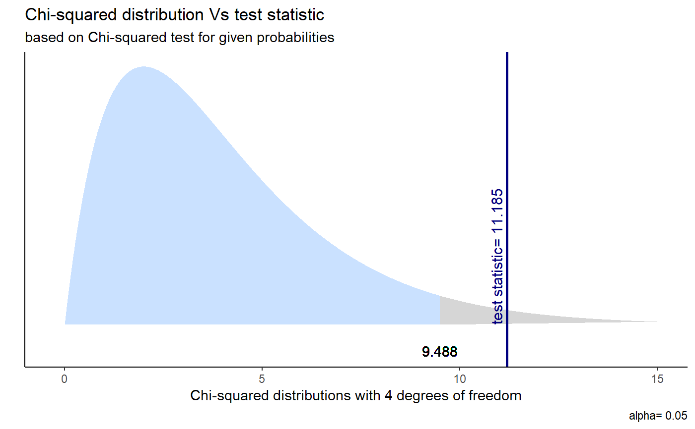
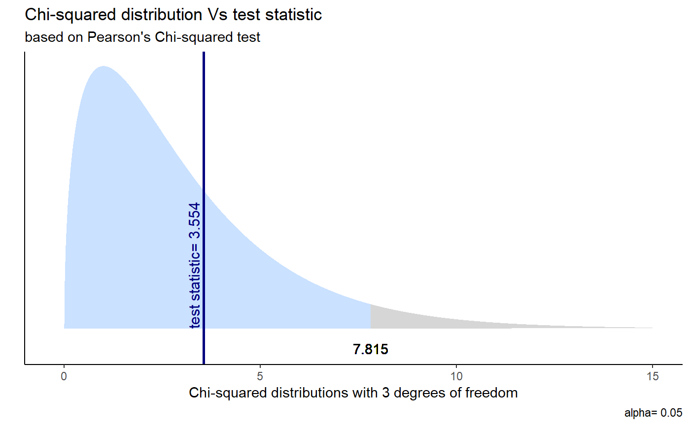

Visualise chi-squared contingency table tests and goodness-of-fit tests.
ggchisqtest(t, colaccept="lightsteelblue1", colreject="gray84", colstat="navyblue", alpha=0.05)
| t | a list result of |
|---|---|
| colaccept | color the acceptance area of the test |
| colreject | color for the rejection area of the test |
| colstat | color for the test statistic vline |
| alpha | default set to 0.05, choose confidence level for the plot as it is not stated in chisqtest |
## Chi-squared test for given probabilities x <- c(A = 20, B = 15, C = 25) chisq_test <- chisq.test(x) chisq_test#> #> Chi-squared test for given probabilities #> #> data: x #> X-squared = 2.5, df = 2, p-value = 0.2865 #>ggchisqtest(chisq_test)x <- c(10, 86, 45, 38, 10) p <- c(0.10, 0.40, 0.20, 0.20, 0.10) chisq_test2 <- chisq.test(x, p = p) chisq_test2#> #> Chi-squared test for given probabilities #> #> data: x #> X-squared = 11.185, df = 4, p-value = 0.02456 #>ggchisqtest(chisq_test2)## Pearson's Chi-squared test library(MASS) sex_smoke <- table(survey$Sex, survey$Smoke) chisq_test3 <- chisq.test(sex_smoke) chisq_test3#> #> Pearson's Chi-squared test #> #> data: sex_smoke #> X-squared = 3.5536, df = 3, p-value = 0.3139 #>ggchisqtest(chisq_test3)